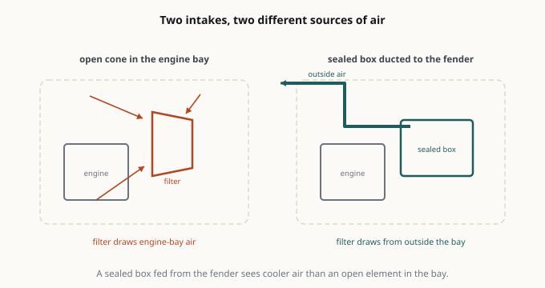

Car Mod Review 엔진 & 인테이크  도해 필터가 어디서 공기를 끌어오는지가 박스의 이름보다 중요합니다. 2.7L TurboMax 실버라도 콜드에어 인테이크: 효과인가, 소음인가?2026-10-04 튜닝 해설: 플래시, 피기백, 스탠드얼론 — 그리고 보증 이야기2026-10-24 콜드에어 인테이크: 하는 일, 못 하는 일, 그리고 MAF 문제2026-11-03